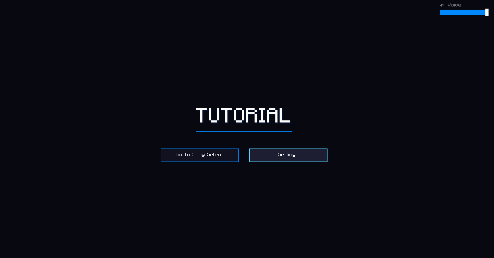
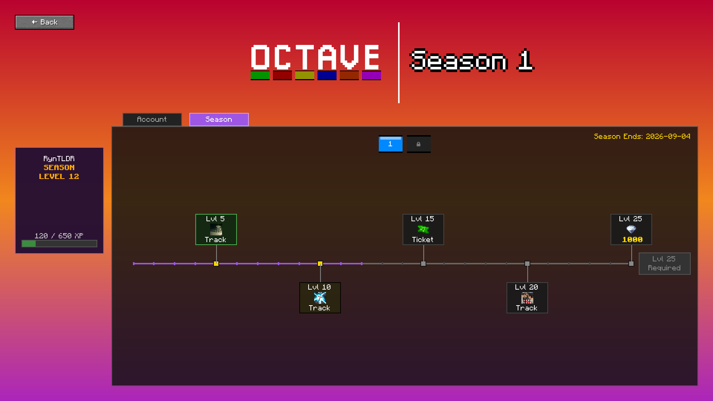
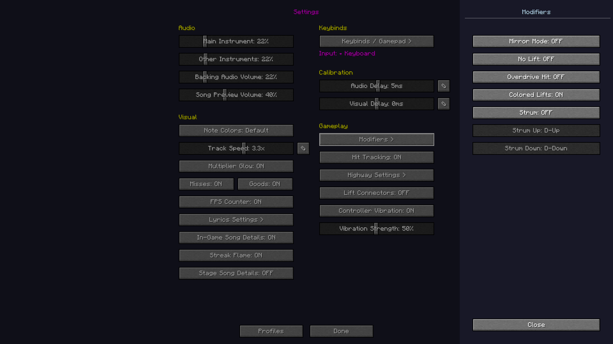
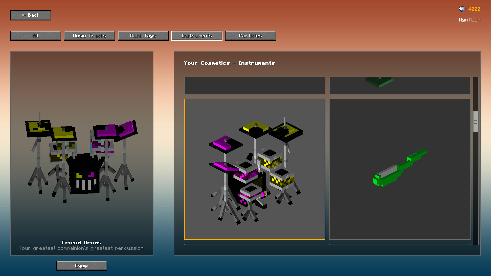
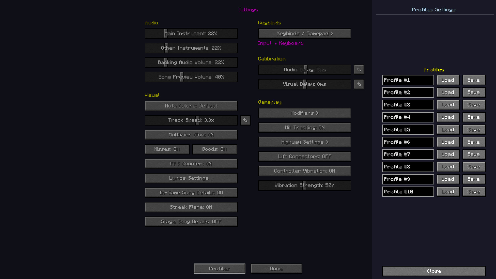
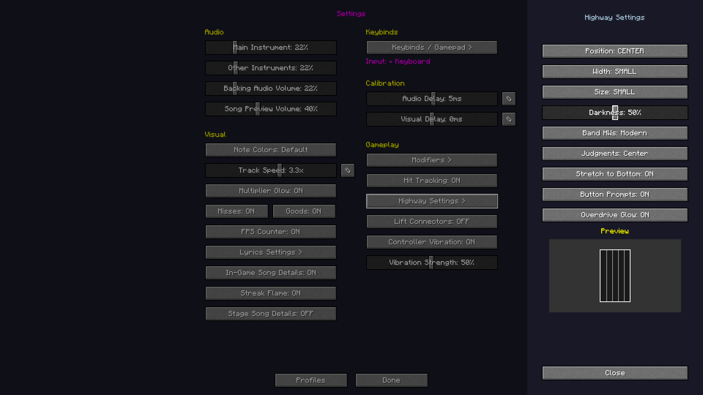
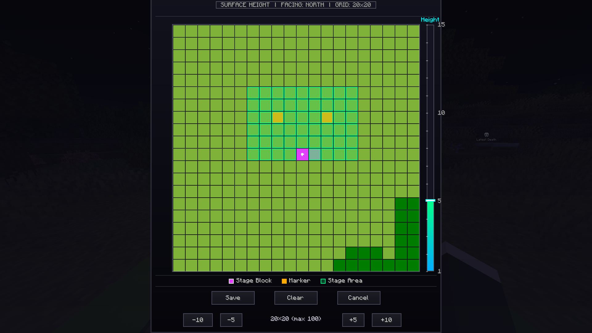
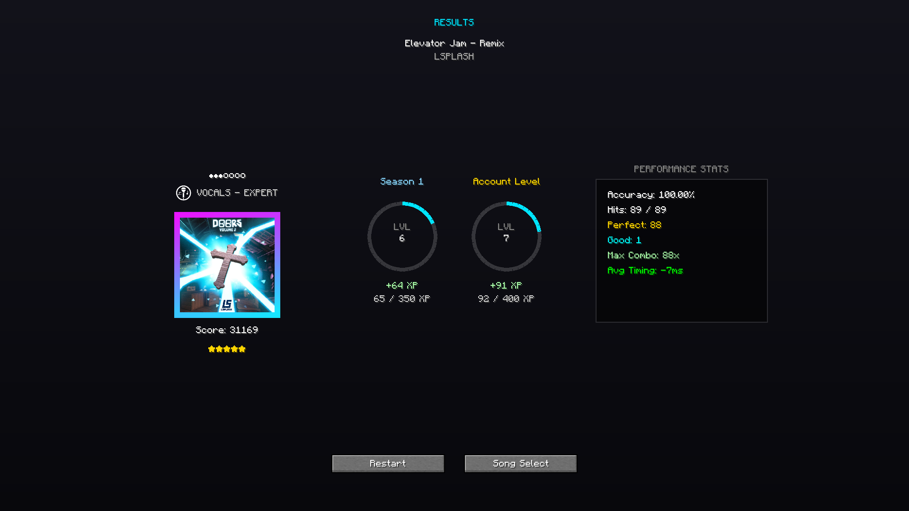
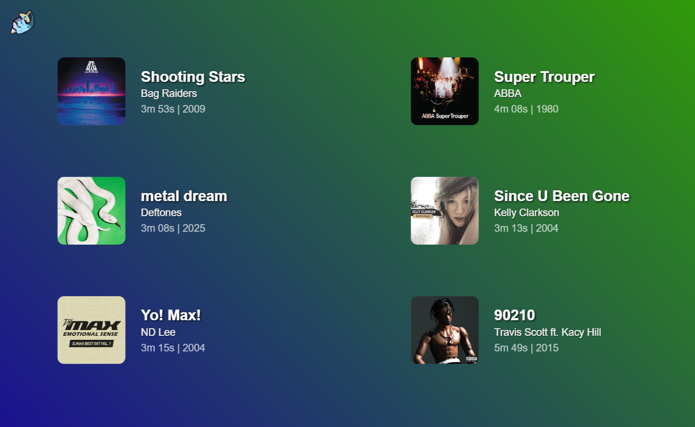
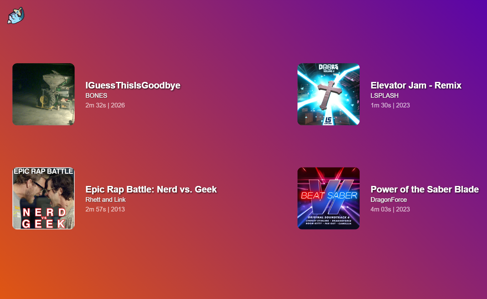

For any new players joining this season, when interacting with a stage block a tutorial will be displayed to help you find your footing with Octave. This will be improved upon with time but the current tutorial is super helpful.

A look at the tutorial system in use
Progression
From now on, playing music tracks will grant you xp, more depending on difficulty and length. There are two forms of progression, Account and Seasonal. Any account levels made when playing are permanent and will grant you cool new rewards. Seasonal progression resets every new season. Any rewards claimed from these seasonal "passes" will be kept and once a new seasonal "pass" is released, any items will instantly transfer into the shop so don't worry about not making it to a certain level! As a bonus, the newly released songs each week will grant double xp towards both progression systems for the weekend! You can access your progression menu from the pause menu.

A look at the Progression Screen
Modifiers
New in the settings menu is the "Modifiers" menu, allowing you to enable things such as No Lifts, Strumming, Lift Colors + more. This will be expanded upon in the future and will allow for more game changing modifiers to be set.

Modifiers menu
Gamepad + Instrument Support
Not too long ago, Octave released support for gamepad and in tandem plastic instruments. In the modifiers menu, you will now find an option to enable "Strumming" as well as binding for strumming. This alongside no lifts allows for simple guitar gameplay. The gamepad system has also been fleshed out much more allowing for easier navigation of the menu overall.
Instrument Skins
New to the Item Shop are instrument skins. Just like the Octave music tracks, you can purchase these with gems in either bundles or separately. As time goes on, more instruments will be available in the shop for players to purchase and use. Some will also be available to earn through the new Progression menu but don't worry, any skins in the seasonal "pass" will rotate into the shop after the season ends!

Instrument Skins
Profiles
In the settings menu, you will now find a "Profiles" button that allows you to save your settings and load them at a later date too in case you ever switch them. This is especially usefull when switching between keyboard, gamepad and guitar. You can have up to 10 profiles currently and each can be shaped to your liking. Every setting will be saved and loaded including modifiers, calibration, everything.

Profiles Menu
General
New Settings
Some new settings have been added to provide further customisation to your gameplay. This includes "Overdrive Glow" which adds a golden outline to the highway when overdriving, "Stretch to Bottom" which will make your highway reach to the bottom of the screen, "Button Prompts" which will show your keybinds at the bottom of the highway when stretched to bottom and judgements can now be moved from the left to the center. These can all be found in the Highway Settings tab. You can also now enable "Hit Tracking" under "Gameplay" in settings to display your perfects, goods, misses and overhits on the left side of the screen during gameplay.

Updated settings
Gameplay Adjustments
You will now be able to play multiplayer using your own stage block without performance markers. However, if you would like to change the players positions you can shift + right click the stage block to open up a new menu that allows you to set the "Stage Area." Once the area is set, right clicking on any green tile will allow you to place performance markers, right clicking again will remove them. If you would like to change which player stands on which marker, right clicking the performance marker will open a menu that lets you pick which player will stand on that one.

Adjustments
UI Changes
A new loading screen and new results screen have been added, alongside an animation for both the intro and outro of a song and an animation that displays your seasonal level + account level in the results screen.

New loading screen
New Songs
As per usual, we have a line up of songs for this week + some extra songs tied to the progression system. The songs tied to the progression system will rotate into the shop once the season ends.

Shop Songs

Progession System Songs
Technical Updates
Bug Fixes
Fixed Shop Menu Crashing At 100 Items
Technical
Rewrote the entire performer code
Song Preview Audio is Streamed Now
Fixed Song Select Screen to scale perfectly for your screen size
Practice Mode fully works with Controller now
Performance
Faster Bootup
Greatly increased framerate in singleplayer and multiplayer.
Fixed a lot of lag in certain menus.
Graphics / Visual
Improved the scroll bar for the song select.
Better Lead and Guitar Hand Animations
Mini and Normal Band Highways are now called Legacy and Modern
Stage Block Model Was Fixed
Modern highways in band mode are properly scaled for how many players are playing.